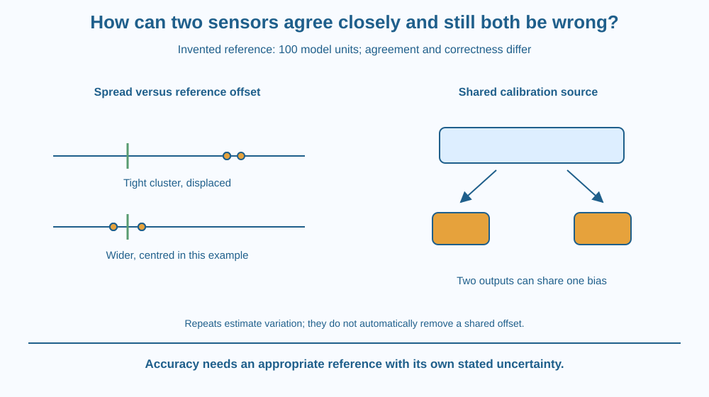

Distinguish precision from accuracy using a stated reference. Explain why two agreeing devices can share a bias and why extra repeats do not automatically correct it. Evaluate evidence from independent checks without pretending a reference measurement has no uncertainty.
Two sensors give nearly identical readings. Their owners conclude both must be correct. A suitable reference later indicates that both are shifted in the same direction.
Agreement was real, but it demonstrated consistency between the devices rather than closeness to the intended reference quantity. If the devices share a calibration source or method problem, they can share an error too.
The useful question is not only do the numbers agree, but what evidence connects them with the quantity being measured.
Precision concerns how closely repeated values agree under specified conditions. Accuracy concerns closeness to a suitable reference or accepted value, taking relevant uncertainty into account. The terms answer different questions.
Consider an invented reference value of 100 model units. Sensor A repeatedly gives 107, 108 and 107. These readings are closely grouped but shifted above the reference. That pattern illustrates good repeatability alongside a substantial bias in the model.
Another set, 99, 101, 99 and 101, is more spread but centred on 100. The examples show that spread and location relative to reference need separate descriptions. They are not actual performance data for a named sensor.
A systematic bias can arise from calibration, a shared conversion assumption or the measurement setup. Two devices using the same faulty reference can agree closely while both remain displaced from the intended quantity.
Taking more repeats can help estimate random variation and improve some summaries, but it does not automatically remove a fixed shared offset. Averaging many values near 107 does not make them become 100 merely because the average has more digits.
Resolution is different again: the smallest displayed increment or discernible change. A display with fine decimal steps is not proof of accurate measurement. Extra digits can represent a precise rendering of a biased quantity.
An independent check should address the suspected source rather than reproduce it. Comparing two devices calibrated from the same faulty source is less informative about that common fault than a suitable different reference method.
References also have uncertainty and conditions. A careful report states what was compared, under what procedure and with what limits. It should not declare perfect truth based on a convenient reference number or assume disagreement always belongs entirely to one instrument.
Draw a number line with a reference marker and repeated readings as dots. Use one cluster close together but away from the reference and another more spread around it.
Label spread and offset separately. A visual cluster can be impressive while answering only the precision question. The reference marker adds the accuracy-related comparison.
Now draw two devices connected to the same calibration box. Put an offset in that box and trace it to both outputs. Add a separate reference route that does not share the same source. This model explains why independence concerns pathways, not simply the number of devices on the table.
The SVG shows the invented 100-unit reference and the two example reading patterns. Separate brackets identify spread and displacement from reference. No real manufacturer or specification is attached.
A second panel connects two sensors to one shared biased calibration source. An independent-check route bypasses it. The diagram therefore shows why matching readings need not provide two independent confirmations.
The illustration uses idealised values to clarify terms. It does not establish an instrument's actual accuracy or erase reference uncertainty in a real measurement.

School thermometers, balances and digital sensors can agree or disagree for several reasons. A common setup problem can affect them together, while different response times or measurement locations can create differences without either device being defective.
A responsible comparison records conditions and a suitable reference rather than choosing the reading one prefers. This is especially important when results are later used to compare small differences between samples.
The lesson gives no medical interpretation of a body-temperature reading and no calibration instructions for safety-critical equipment. Its examples remain abstract so the measurement distinction can be learned without making a high-stakes device decision.
Use squared paper and a pencil. No real sensor is required.
Write invented data on the page. Explain why an average of the A readings remains displaced. The exercise does not measure a device or certify a reference; it makes two different qualities of a dataset visible.
Why is agreement between two devices less decisive if they share the suspected faulty calibration? Describe the common pathway rather than simply counting two versus one.
Now imagine a reference with uncertainty large enough to overlap the apparent discrepancy. What qualification belongs in the conclusion? Comparing numbers requires attention to uncertainty, not only a visual judgement that one dot sits closer to a line.
What does precision describe?
Answer: A — Precision concerns spread under stated conditions rather than correctness by itself.
Why can two devices agree and still be biased?
Answer: B — A common systematic contribution can shift both devices in the same direction.
Many repeats remain near 107 against a model reference of 100. What is justified?
Answer: C — Averaging a persistently offset set does not remove the systematic difference.
Create a report template with separate spaces for repeated readings, spread, reference, offset and shared-method risks. Include an independent-check proposal that addresses a specific possible bias.
Use the invented examples only. Your conclusion should avoid calling fine display resolution proof of accuracy or claiming that enough repeats automatically repair any systematic fault. State the reference conditions rather than treating its value as beyond all uncertainty.
Two agreeing measurements can contain less independent evidence than they appear to. If both inherit the same source of bias, the agreement partly repeats one assumption. Understanding the measurement chain can therefore matter more than collecting another device that relies on the same unchecked starting point.
Precision describes agreement among readings; accuracy needs a suitable reference, and shared bias can make multiple devices agree while all remain displaced.